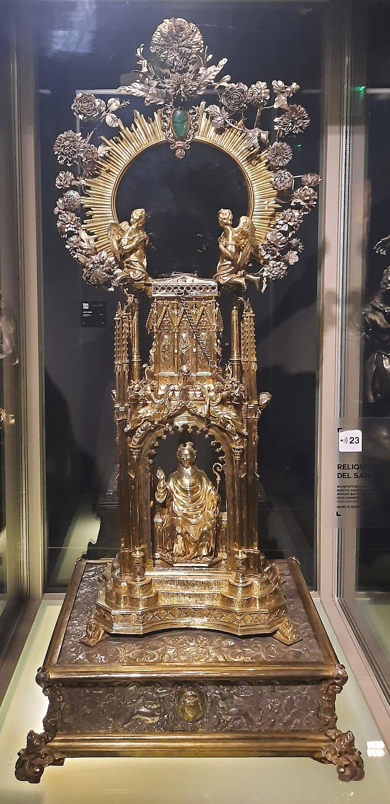

Saint / folklore
Parenti di San Gennaro

Background
A clique of aged Neapolitan women held to be the blood descendants of San Gennaro.
The liquefaction of San Gennaro’s blood takes place three times a year: on the Saturday before the first Sunday in May, on 19 September, and on 16 December. A group of elderly women, the parenti (relatives) of the saint, hold a special place at it. They sit near the altar and recite prayers and litanies in dialect while the archbishop turns the reliquary to check for change.
When the blood is slow to liquefy, the tone changes. The women plead, then scold, and by tradition they insult the saint, calling him faccia gialluta (“yellow face”, after the gilded bust that holds his skull). This is less irreverence than family intimacy: San Gennaro is treated as a powerful relative who owes the city a favour and must be reminded of it. The custom has softened over the years, but the parenti still attend.
In Naples ’44
Led in to take their places around the cathedral altar, they are credited with the power — and the duty — of browbeating their ancestor into performing the blood miracle.
Appears in 1 diary entry.
-
May 7 (i) 1944San Gennaro's blood liquefies, but slowly — considered a bad omen — after days of anxious public vigil that could have sparked unrest if it had failed.
aged women believed descended from the saint
Use ← → to move between pages